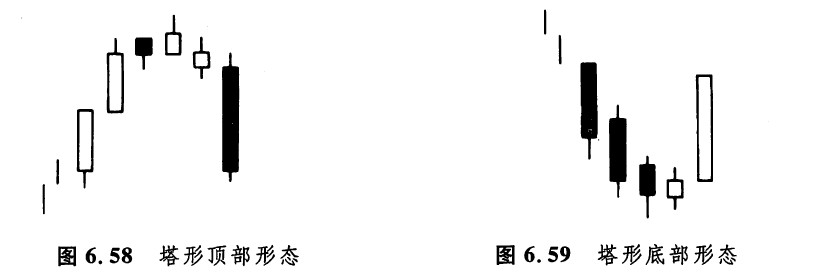
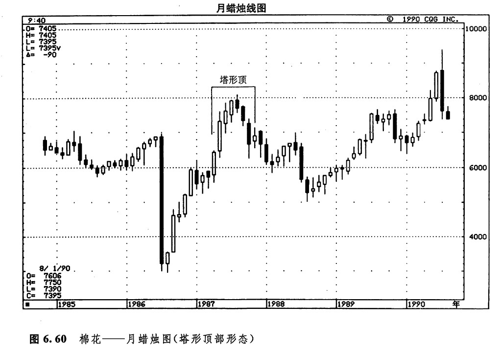
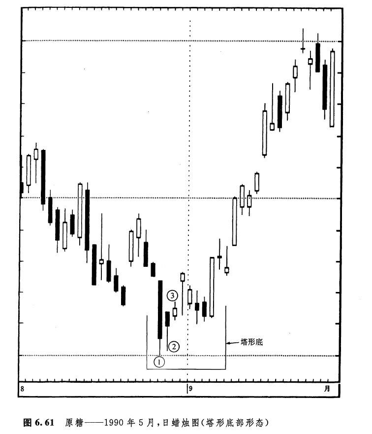
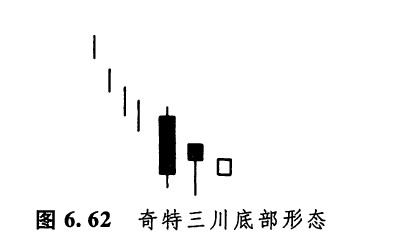

塔形顶部形态属于顶部反转形态。市场本来处在上升趋势中，在某一时刻，出现了一根坚挺的白色蜡烛线（或者出现了一系列高高的白色蜡烛线）。后来，市场先是放缓了上涨的步调，然后，蜡烛线的高点开始下降。最后，市场上出现了一根或者数根长长的黑色蜡烛线，于是，塔形顶部形态就完成了（如图6.58所示）。在本形态中，两侧的长长的蜡烛线形似高塔——因此，它就得了这样的名称。
塔形底部形态发生在低价格水平上。市场在形成了一根或数根长长的黑色蜡烛线之后，经历了一阵短暂的平静。然后，出现了一根或数根长长的白色蜡烛线。这样就形成了一个塔形底部形态，它两侧的外形也像高塔一般（如图6.59所示）。这就是说，市场先以长长的蜡烛线一路而下，后来又以长长的蜡烛线一路而上。

如图6.60所示，从1982年的第1季度到当年第2季度，市场上出现了一群坚挺的白色蜡烛线，后来，又出现了一系列长长的黑色蜡烛线。于是，高高的白色蜡烛线形成了左边的高塔，而长长的黑色蜡烛线形成了右边的高塔。左侧的三个黑色蜡烛线同时也构成了一个三只乌鸦形态。

在图6.61所示的实例中，显示了两种形态——其中一个是塔形底部形态，另一个是我们未曾讨论过的一种罕见的底部反转形态，称为奇特三川底部形态。首先，我们来看看塔形底部形态。8月28日是一根长长的黑色蜡烛线，然后是一段由小的蜡烛线形成的横向延伸行情，9月7日出现了一根长长的白色蜡烛线，于是这个高塔形底部形态就大功告成了。8月28日的陡直下跌竖起了左侧的高塔，而9月27日的急剧上涨则立起了右侧的高塔。请注意从8月28日到8月30日的三根蜡烛线，我们在图上用1、2、3分别作了标注。这3根蜡烛线组成了一个极其罕见的奇特三川底部形态（如图6.62所示）。在蜡烛图形态中，与这个形态关系最近的是黄昏星形态（疑为笔误，应当是启明星形态——译者）。奇特三川底部形态属于底部反转信号。它的第一根蜡烛线是一根极长的黑色蜡烛线；第二根蜡烛线也是一根黑色实体的蜡烛线，其收市价高于第一根蜡烛线的收市价；第三根蜡烛线是一根具有很小的白色实体的蜡烛线。最后这根蜡烛线说明，市场的抛售压力已经消耗殆尽了。


在西方的技术分析术语中，与塔形反转形态最接近的对应形态，要数长钉形形态，或者说V形反转形态。在长钉形反转形态中，市场原先处在强劲的趋势过程中，突然，市场掉转了方向，形成了方向相反的新趋势。塔形顶部形态和塔形底部形态，与圆形顶部形态和平底锅底部形态也有相似的地方。两者最主要的区别是，在塔形形态中，市场反转之前和反转之后，出现的都是长长的实体，而在圆形顶部形态和平底锅底部形态中，则含有窗口。同圆形顶部形态和平底锅底部形态比起来，塔形形态通常含有更多的波动剧烈的蜡烛线。实际上，我们不必担心一个顶部过程到底属于塔形顶部形态，还是属于圆形顶部形态，或者一个底部过程到底属于塔形底部形态，还是属于平底锅形态。一般认为，所有这些形态都是主要反转形态。
注
[1]墨菲·约翰，《期货市场技术分析》，丁圣元译，地震出版社，1994年，第69~70页，原著为纽约金融学院1986年出版，第79页。
下一篇：第七章 持续形态
上一篇：圆形顶部形态和平底锅底部形态（圆形底部形态）
copyright @ 2018 制作：汉钛电线，Hingtak Wire & Cable LLC